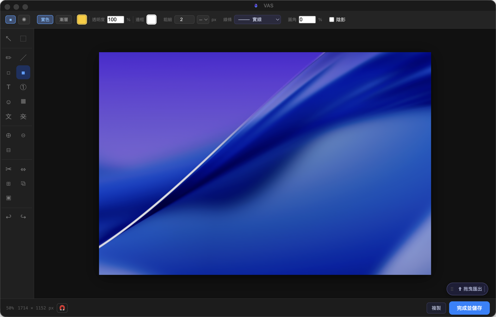
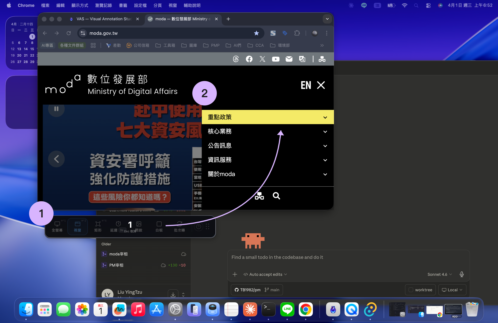
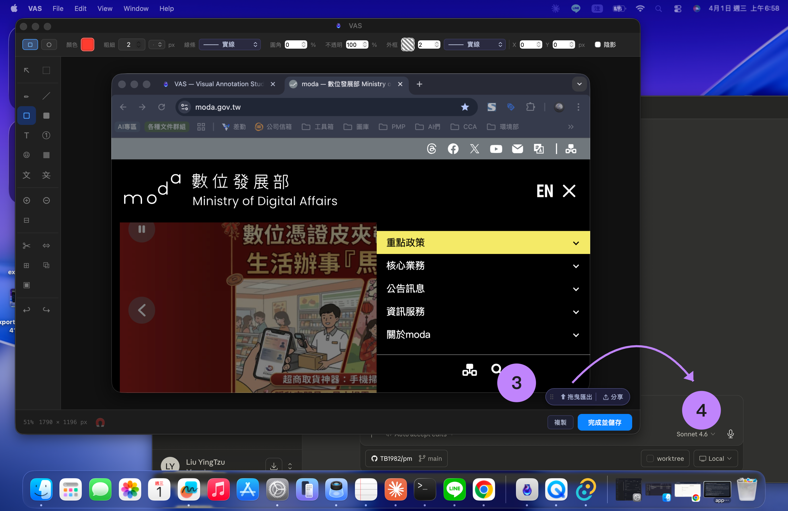
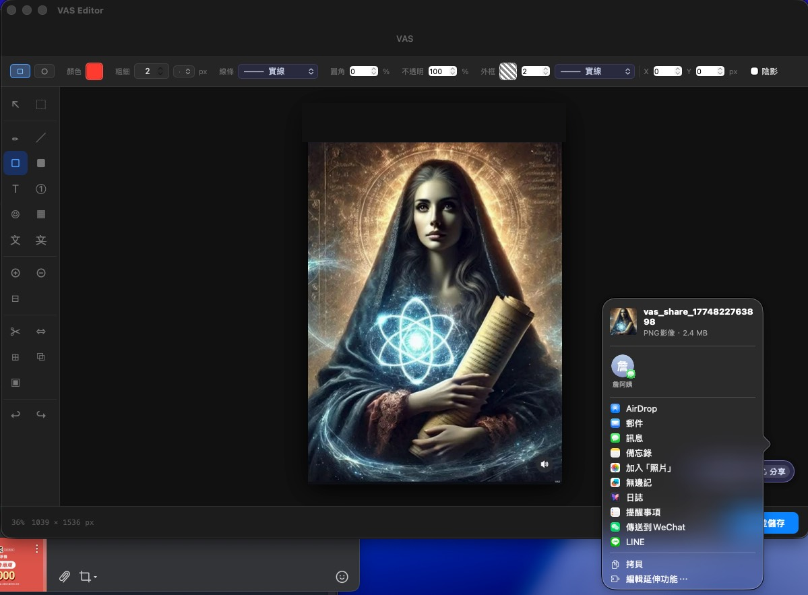
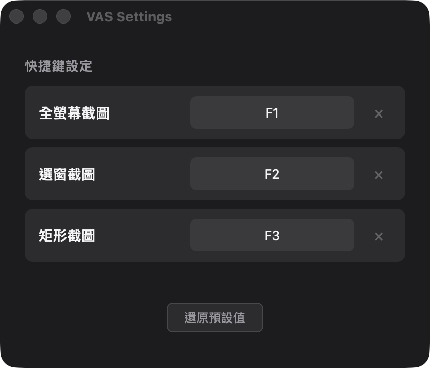
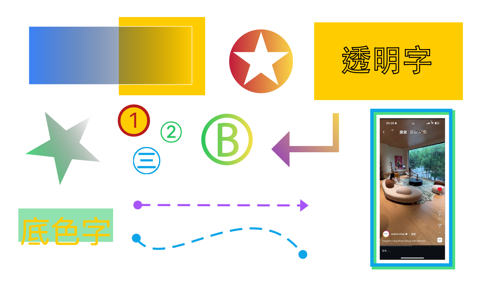

VAS
Visual Annotation Studio
為跨領域溝通而生的截圖與圖像敘述工具
Electron 先行首發版 · 需要 macOS · Apple Silicon (arm64) · 已通過 Apple notarize 驗證
Capture Toolbar
關於 VAS
它最特別的地方不在對標哪個產品，而在於它試圖成為傳遞資訊的煉金容器。
資訊用順勢的方式滑入 VAS，再由各式工具乘載思緒，無痛傳遞到任何你想讓它去的地方。一站式匯聚所有你想像得到的常用工具，讓每個人都能在這個容器裡找到屬於自己的溝通方式。
VAS 編輯器介面預覽

找到你的使用方式
不同身份，不同切入點，同一個工具
截圖要給人看，但截圖裡有不能給人看的東西
截圖只是素材，我還要在上面做事
截圖是溝通媒介，要清楚、要快、要能傳
截圖含伺服器資訊，對外分享前需要清理
Thoughtful by Design
細節裡的貼心
Capture Toolbar Tauri 專屬
一盞呼吸燈，需要時它都在
工具列縮成一條呼吸燈，待在桌面角落。拖著檔案靠近，它自己張開。放開，直接進編輯器。走了，它縮回去，繼續等。


Delay Capture 全版本
那個截不到的瞬間，截到了
設好延遲，dropdown、tooltip、hover 狀態——點下去才出現的畫面，終於不再溜走。截完直接進編輯器，標注、匯出，Workflow 不再有任何「選擇開啟資料夾」或「確定鍵」卡住你。
ShareSheet Tauri 專屬
順勢流動，一鍵出口
截完，不用存檔。不用找資料夾。不用切 App。叫出 ShareSheet，選一個去處，圖就到了。資訊流進 VAS，也流出 VAS——從來不是你的終點站，是你工作流的一條河。


Global Shortcuts Tauri 專屬
你的習慣，不用重學
從任何截圖工具遷移過來，快捷鍵配合你，不是你配合快捷鍵。在偏好設定裡錄製一次，往後每個工具都回應你熟悉的那個按鍵組合。
Annotation Tools 全版本
比你以為的更多可能
漸層色塊、透明疊加、符號印章、貝茲曲線、疊圖、圖層上下移動、複製物件、複數字型選擇——不只是標注工具，也是一個輕量設計環境。你能想到的表達方式，它都有。

這些設計背後的思路
閱讀設計洞察 →Origin
來自一位一行程式碼都不會寫的 PM，
以及 Claude Code 的 Claude，
人機協作 一週內迭代至 v3.43 而誕生的作品。
想知道是怎麼做到的？
閱讀協作筆記 →Roadmap & Pricing
兩個版本，一個故事
- 所有現有功能完整收錄
- 無使用期限，永久免費
- 安裝包體積較大（~113 MB）
- 前端共用，隨 Tauri 版同步受惠
- 全新輕量架構，體積大幅縮小
- 所有後續新功能優先上線
- ShareSheet 分享、自定義快捷鍵等進階工具
- Electron 早鳥用戶享升級優惠
填問卷，換早鳥優惠碼
6 道題，每一道都值得好好想想。你的答案直接影響 Tauri 版的功能優先順序——Tauri 版推出時，我們會同步以 E-mail 寄送早鳥優惠碼。
前往填寫問卷E-mail 僅用於 Tauri 版推出時寄送優惠碼，不作其他用途。